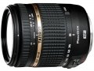

器材库 > APS画幅镜头 > 18-270/3.5-6.3 Di II VC PZD (B008)

详细规格
镜头类型
标准变焦镜头
发布日期
2010-12-09
厂家推荐价格
84,000.00 （日元）
焦距
18mm-270mm
最大光圈
f/3.5-6.3
最小光圈
f/22-40
视角（对角）
75°33 - 5°55
镜头结构
16片/13组
非球面镜片
3片
低/超低色散镜片
2片
光圈叶片
7片
最近对焦距离
49cm
最大放大倍率
1:3.8
驱动马达
PZD（超声波自动对焦马达）
滤镜口径
62mm
镜头卡口
Canon EF, Minolta/Konica-Minolta/Sony AF, Nikon F
防抖
是
颜色
黑色
尺寸
74.4×88mm
重量
450g
附件
莲花形遮光罩
备注
索尼卡口的镜头因索尼机身内设置有防抖装置，没有搭载VC的防抖装置。
洄2013-02-16 13:584.42 分
操作性 5.00耐用性 4.50性价比 5.00解像力 4.00色彩还原 4.00机械结构 4.00
flyingleaf12012-11-20 19:574.5 分
操作性 4.50耐用性 4.50性价比 4.50解像力 4.50色彩还原 4.50机械结构 4.50
tennnnnnn2012-11-19 10:055 分
操作性 5.00耐用性 5.00性价比 5.00解像力 5.00色彩还原 5.00机械结构 5.00
sagao2012-04-26 10:013.92 分
操作性 4.50耐用性 4.50性价比 4.50解像力 3.00色彩还原 3.50机械结构 3.50
玖隀天2011-09-15 13:034.5 分
操作性 5.00耐用性 5.00性价比 4.50解像力 4.00色彩还原 4.50机械结构 4.00
newkaven2011-04-23 18:224.25 分
操作性 5.00耐用性 4.50性价比 4.00解像力 4.00色彩还原 4.00机械结构 4.00
lhjlhj2011-03-05 10:214.5 分
操作性 4.50耐用性 4.50性价比 4.50解像力 4.50色彩还原 4.50机械结构 4.50
kirishiya2011-03-02 21:114 分
操作性 4.50耐用性 4.00性价比 4.00解像力 3.50色彩还原 4.00机械结构 4.00
产品图 / 样片
18-270/3.5-6.3 Di II VC PZD
评测 / 相关文章
- 大变焦小巧化，腾龙新18-270测试报告 （存档）
- ［行情］镜头人气榜2011年第四十期 （存档）
- ［行情］镜头人气榜2011年第三十九期 （存档）
- ［行情］镜头人气榜2011年第三十八期 （存档）
- ［行情］镜头人气榜2011年第三十七期 （存档）
- ［行情］镜头人气榜2011年第三十六期 （存档）
- ［行情］镜头人气榜2011年第三十五期 （存档）
- ［行情］镜头人气榜2011年第三十四期 （存档）
- ［行情］镜头人气榜2011年第三十一期 （存档）
- ［行情］镜头人气榜2011年第三十期 （存档）
- ［行情］镜头人气榜2011年第二十九期 （存档）
相关文章
- ［行情］镜头人气榜2011年第四十期 （存档）
- ［行情］镜头人气榜2011年第三十九期 （存档）
- ［行情］镜头人气榜2011年第三十八期 （存档）
- ［行情］镜头人气榜2011年第三十七期 （存档）
- ［行情］镜头人气榜2011年第三十六期 （存档）
- ［行情］镜头人气榜2011年第三十五期 （存档）
- ［行情］镜头人气榜2011年第三十四期 （存档）
- ［行情］镜头人气榜2011年第三十一期 （存档）
- ［行情］镜头人气榜2011年第三十期 （存档）
- ［行情］镜头人气榜2011年第二十九期 （存档）